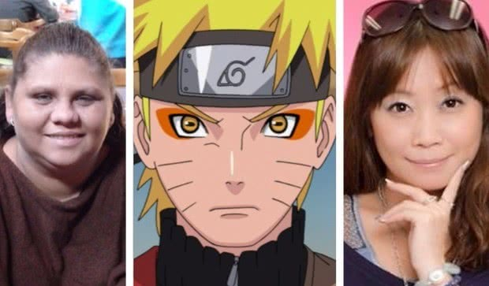
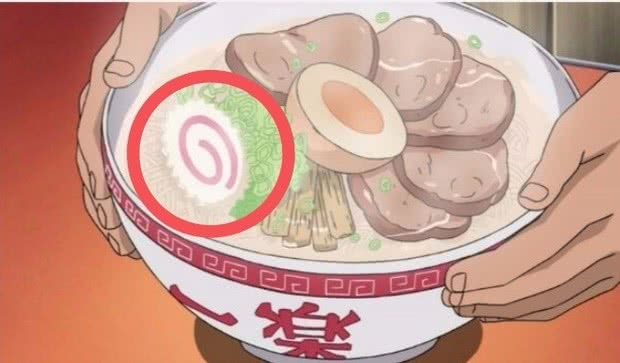
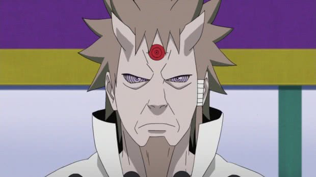
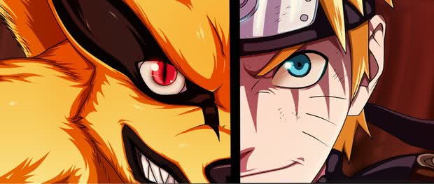
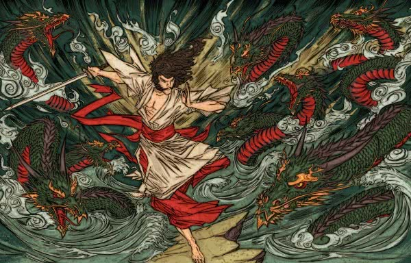

Historia
Naruto Uzumaki é um menino que vive em Konohagakure no Sato ou simplesmente Konoha ou Vila Oculta da Folha,a vila ninja do País do Fogo. Quando ainda bebê, Naruto teve aprisionada em seu corpo a Kyuubi no Youko por Minato Namikaze (quarto
Hokage, e seu pai), com a finalidade de salvar a Vila da Folha. Desde então, Naruto é visto por muitas pessoas como um monstro, não só pelos familiares das pessoas mortas pela Kyuubi, mas também por pessoas que não toleram suas brincadeiras,
já que o mesmo é extremamente hiperativo, incompreendido e solitário. Naruto sonha em se tornar o Hokage de sua vila, um ninja poderoso e respeitado, para assim poder ser reconhecido por todos.Ele entra na academia ninja, onde sofre
com as notas baixas, mas é ajudado por seu professor, Iruka Umino, que posteriormente se torna seu amigo. Consegue finalmente se tornar Gennin, e a partir daí passa a ser ensinado por um Jounin, Kakashi Hatake, e forma uma equipe com
Sasuke Uchiha (que no começo não se dão bem) e Sakura Haruno, sua grande paixão.
Curiosidade
Naruto é dublado por mulheres!
Esse é um fato conhecido por muita gente, na realidade. Tanto na versão original (em japonês) como na brasileira, Naruto Uzumaki é dublado por uma mulher. Não apenas o protagonista da série, como vários
outros personagens masculinos também ganham vida na voz de dubladoras.

Naruto era pra ser um mangá de culinária!
Durante uma entrevista em 2012, Kishimoto revelou que Naruto era para ter sido um mangá de culinária! Para quem não sabe, "naruto" é o nome dado para um dos ingredientes típicos do lámen japonês,
consistindo numa espécie de massa cozida com peixe, formando uma espiral no centro, quando cortada em fatias. O palco de toda a trama da série, ainda segundo o seu criador, seria num dos locais favoritos do nosso herói ninja: o restaurante
Ichiraku!

Sábio dos Seis Caminhos e o budismo!
O personagem Hagoromo Ōtsutsuki, conhecido como o Ancião dos Seis Caminhos (Rokudo Sennin), foi criado com inspiração em um ensinamento do budismo: o ensinamento dos seis desejos.

Naruto não seria humano!
A ideia inicial de Masashi Kishimoto era que o ninja fosse uma raposa com a habilidade de se disfarçar de humano, assim como narra a lenda da Kitsune. O editor de Kishimoto acabou por convencer o mangaká a
mudar de planos.

Susanoo é um deus!
Um dos jutsus mais poderosos usados pelos usuários do Mangekyou Sharingan é o Susanoo,Susanoo é considerado o deus do mar e das tormentas, de acordo com a religião xintoísta, e o irmão de Amaterasu (a deusa do sol)
e Tsukuyomi (o deus da lua). Assim como o Susanoo, todos os outros também são nomes de técnicas poderosas que são usadas por alguns membros do clã Uchiha.
